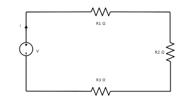
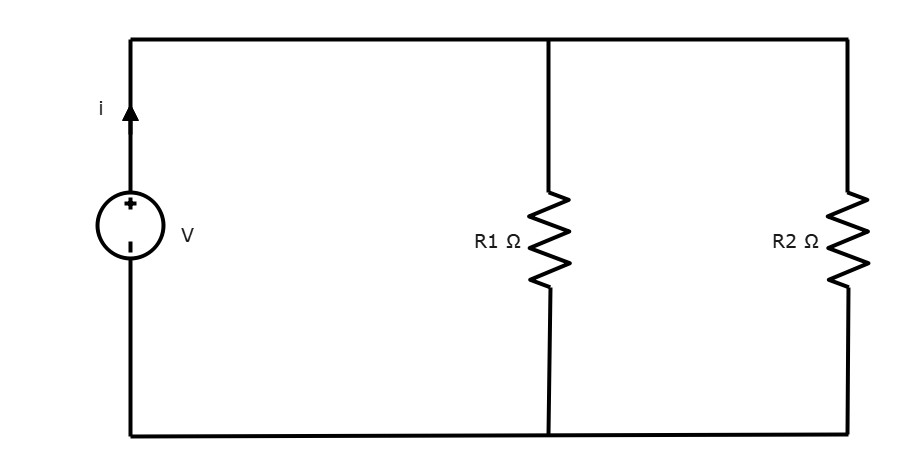
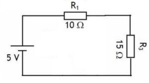

Ejercicio 1: Circuito en Serie

En este ejercicio, aprenderemos cómo funciona un circuito en serie. Los componentes se conectan uno tras otro, formando una sola ruta para la corriente eléctrica.
- Conecta una resistencia de 10Ω en serie con una resistencia de 20Ω y 5Ω.
- Conecta una fuente de alimentación de 9V.
- Calcula la corriente total del circuito usando la ley de Ohm (V = IR).
- Determina el voltaje en cada resistencia.
Ejercicio 2: Circuito en Paralelo

En este ejercicio, aprenderemos cómo funciona un circuito en paralelo. Los componentes se conectan en ramas separadas, formando múltiples rutas para la corriente eléctrica.
- Conecta una resistencia de 10Ω en paralelo con una resistencia de 20Ω.
- Conecta una fuente de alimentación de 9V a los extremos del circuito.
- Calcula la resistencia total del circuito usando la fórmula para resistencias en paralelo.
- Determina la corriente a través de cada resistencia.
Ejercicio 3: Ley de Ohm

En este ejercicio, aplicaremos la ley de Ohm para encontrar la resistencia, el voltaje y la corriente en un circuito simple.
- Conecta una resistencia de 15Ω y otra de 10Ω a una fuente de alimentación de 5V.
- Calcula la corriente usando la ley de Ohm (I = V/R).
- Verifica tus cálculos midiendo la corriente con un amperímetro.
- Explora cómo cambia la corriente si se utiliza una resistencia diferente.